3. 界面及功能说明¶
3.1. 在线调试界面及功能说明¶
3.1.1. 调试结构界面¶
打开CviPQ Tool工具进行联机以后，工具左侧的调试表面板显示所有模块的可调试项，结构如 图 。
{kind=link}
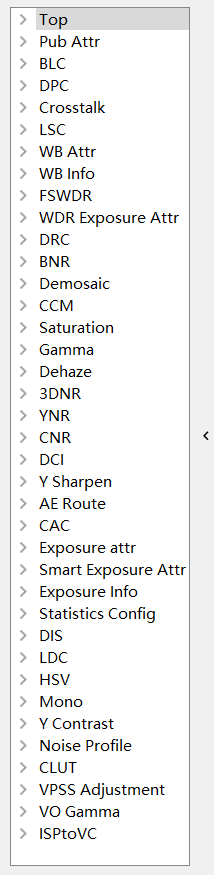
图 3.1 工具左侧结构¶
点击这些模块的可调试项，在工作右侧的调试区域会显示其模块对应的调试页面，提供用户调节参数，如 图 所示。
{kind=link}
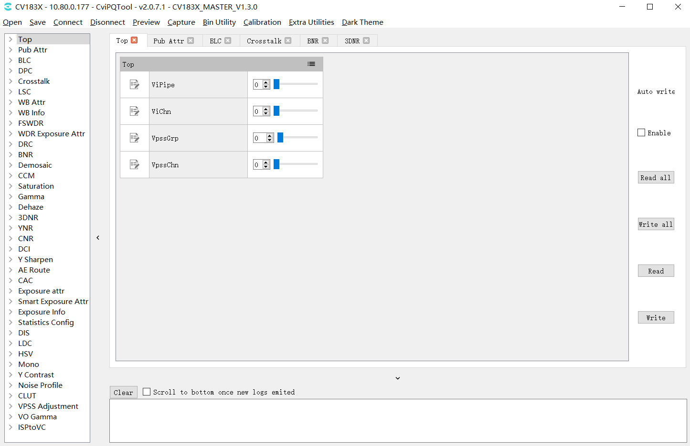
图 3.2 调试页面¶
3.1.2. 寄存器/算法参数调整¶
在工具接口左侧列表中的每项为“寄存器/算法参数”调试页。这些页对应的调试界面如 图 所示，每个模块对应的调试页面中所有参数会根据不同的功能被分为若干个群组。
{kind=link}
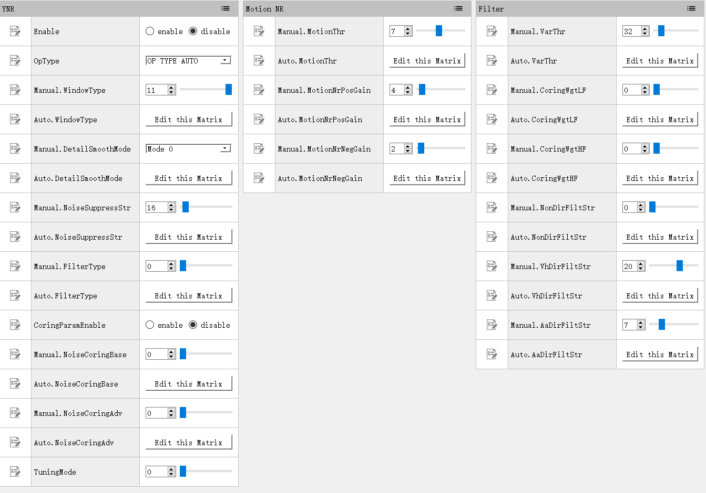
图 3.3 寄存器/算法参数的调试页面 (以YNR为例)¶
3.1.2.1. 寄存器/算法参数的查看与修改¶
每个群组内都包含寄存器与算法参数，其中标记“ ”的参数是可读写参数，标记“”的参数是只读参数。参数按照其属性和取值范围不同，分为以下几类，以不同形式的控件来呈现，如 表 所示。
”的参数是可读写参数，标记“”的参数是只读参数。参数按照其属性和取值范围不同，分为以下几类，以不同形式的控件来呈现，如 表 所示。
{kind=link}
类型 |
说明 |
控件操作 |
|---|---|---|
布尔 |
二选一 |
通过单选框设置和查看： 
|
数值 |
实数，具有一定的取值范围 |
使用下方控件来调整和查看值： 调整数值可以通过以下方式： 1.直接在文本框输入数值 2.点击文本框右侧小箭头上下微调 3.拖动右侧滑动条 |
枚举 |
多选一 |
通过下拉框设置和查看值： 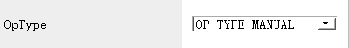 |
矩阵 |
多字节序列 |
调试页面会显示一个编辑矩阵的按钮，如果是只读的矩阵，则会显示查看矩阵的按钮： 
点击按钮会弹出一个对话框，对话框中以表格形式显示对应的矩阵值，用户可以修改表格中的值，若是只读矩阵则只能查看。 用户可以点击Import/Export导入导出矩阵的值，只读矩阵则只有Export按钮。 
|
3.1.2.2. 板端读取数据¶
在工具已经连接板端的情况下，点击每个模块页面最右侧的read按钮（ ），工具将会读取该模块页面每项参数在当前板子上的数值，并更新到界面上显示。
），工具将会读取该模块页面每项参数在当前板子上的数值，并更新到界面上显示。
3.1.2.3. 将参数写入到板端¶
在工具已经连接板端的情况下，点击每个模块页面最右侧的write按钮（ ），工具将会把该模块页面上的每个可写参数写到板子端。
），工具将会把该模块页面上的每个可写参数写到板子端。
3.1.2.4. 参数的暂存与恢复¶
工具对每个调试群组提供四组数据暂存空间，用户可以利用”To Set”按钮保存参数的调整值，再利用”Load Set”按钮进行还原和比较操作，详细操作说明如图2-4所示，请搭配下列1~3文字说明。
当点选此图示时，可将参数暂存与恢复的快速按钮显示出来
点选”To Set”按钮可将当前的参数暂存下来，可将不同的数值暂存在不同Set以便之后快速恢复。
点选”Load Set”按钮可将之前暂存的数值恢复。以 图 为例，使用者已暂存”Set1”和”Set2”两组数值，就可用”Load Set1”或”Load Set2”按钮快速恢复和比较。

图 3.4 参数暂存操作接口（以3DNR为例）¶
3.1.3. 调试数据的批量读写与自动写入¶
当打开调试工具进入主接口时，可在最右侧看到数据的读写控制接口，如 图 所示。

图 3.5 数据读写控制接口¶
读写控制台的操作需要先将工具连接单板，具体的功能有：
Read All按钮：点击此按钮，工具会读取所有模块页面的参数项在板子端的当前数值。建议打开工具进行调试工作前或者导入BIN档后，执行一次全部读取的操作。
Write All按钮：点击此按钮时，工具会将所有模块页面参数项的值写入到板子端。
Auto Write自动写入开关：当勾选此项时，每次调整一个可写的参数项，工具都会将参数的新值写入到板子端。建议调试时打开此项，保证调整值能立刻生效。
Read按钮：点击此按钮时，工具会将当前打开的模块页面所有参数项在已连接板端的当前值读回到接口上。
Write按钮：点击此按钮时，工具会将当前打开的模块页面所有参数项的值写入到板端。
3.1.4. 曲线可视化调试¶
3.1.4.1. 通用曲线功能说明¶
工具中通用曲线如 图 所示，如在3DNR调试页面中，点击Edit this Curve 按钮可进入曲线窗口。

图 3.6 3DNR页面曲线操作示例图¶
图中1为曲线横坐标，2为曲线纵坐标，对应曲线中4个点，修改它们的值，曲线上的点随之改变；也可通过鼠标拖动曲线上的点，对应横、纵坐标值随着改变。
Current ISO下拉选项，可选择不同ISO值，查看其对应曲线。
Switch 模式切换按钮，在曲线模式下点击，进入如下表格模式，表格前4行为横坐标值，后4行为纵坐标值，表格可编辑。

Import，从文件中导入参数。
Export，将参数值导出到文件。
3.1.4.2. Gamma 可视化调试¶
在调试工具左侧清单点击gamma页面，进入Gamma可视化调试页面，如 图 所示。
{kind=link}
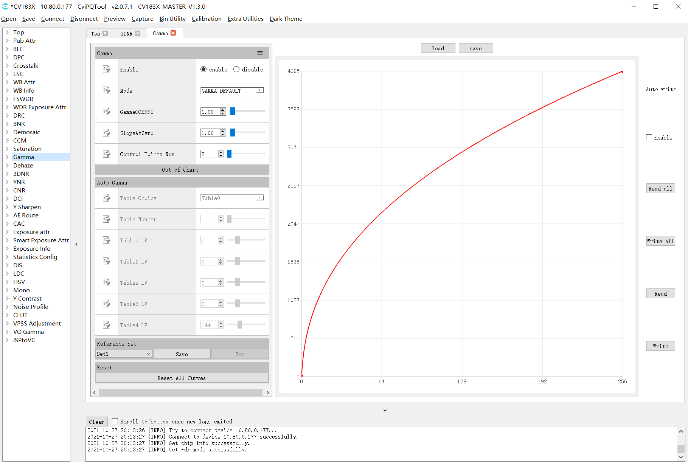
图 3.7 Gamma调试页面¶
以下是具体的参数项说明和用法：
Gamma
Enable参数项，设置这项为enable状态使能Gamma。
Mode参数项，代表曲线调整模式，当选择GAMMA_DEFAULT/GAMMA_sRGB，曲线会重置为默认的曲线并且用户不可手动调整曲线；当选择GAMMA_USER_DEFINE/GAMMA_AUTO时曲线会被重置为起点为(0,0)终点为X/Y轴最大值的直线，用户可以手动调整曲线走向。
GammaCOEFFI参数项，通过在文本框输入数值或者拖动滑动条，可以将当前曲线恢复为标准的Gamma曲线（系数范围为0.01到20.0）。
SlopeAtZero参数项，通过在文本框输入数值或者拖动滑动条，可以调节Gamma曲线在零点的斜率值（斜率范围为0.01到20.0）。
Control Points Num 控制点，当选择GAMMA_USER_DEFINE/GAMMA_AUTO时，通过调整此项参数，用户可以设置能操作的控制点数量。
Auto Gamma （gamma mode设置为GAMMA_AUTO有效）
Table Choice ,根据light value 选择gamma table 0~5，目前使用前4组；
Table Number ，当前使用的table数
Table0~4 LV,对应5个light value 阀值（LV:-5~15）
Reference Set
曲线数据暂存区，工具提供set1到set3共三组暂存空间，当用户点击save按钮将当前曲线的数据保存到选定的set，当用户点击use按钮可将已暂存的数据恢复到曲线接口上。默认未进行暂存操作时，use按钮为灰色不可点击。
Reset
Reset为重置按钮，点击后会重置曲线为起点为(0,0)终点为X,Y为最大值的直线。
Load&Sav
点击“Load”按钮，可以从文件中读取曲线数据，写回到工具数据缓存区，同时刷新显示曲线。
点击“Save”按钮，可以将当前曲线数据保存到本地的文本文件。工具支持保存两种格式的数据文件：Cvitek Json file、Other text file
· 点击页面读写控制接口的Read按钮，工具会从板端读取曲线数据，并刷新曲线的显示。
· 点击Write按钮，工具会将当前曲线的数据写入到板端。
· 如果已勾选Auto Write，当调整曲线时，曲线的数据会自动写到板端生效。
3.1.4.3. VO Gamma¶
在调试工具左侧清单点击VO Gamma，进入VO Gamma可视化调试页面，如 图 所示。

图 3.8 VO Gamma调试页面¶
参数项说明：
Gamma
Enable参数项，设置这项为enable状态使能VO Gamma。
OSD Apply: 显示水印开关。
GammaCOEFFI参数项，通过在文本框输入数值或者拖动滑动条，可以将当前曲线恢复为标准的Gamma曲线（系数范围为0.01到20.0）。
SlopeAtZero参数项，通过在文本框输入数值或者拖动滑动条，可以调节Gamma曲线在零点的斜率值（斜率范围为0.01到20.0）。
Control Points Num 控制点，当选择GAMMA_USER_DEFINE/GAMMA_AUTO时，通过调整此项参数，用户可以设置能操作的控制点数量。
Reference Set
曲线数据暂存区，工具提供set1到set3共三组暂存空间，当用户点击save按钮将当前曲线的数据保存到选定的set，当用户点击use按钮可将已暂存的数据恢复到曲线接口上。默认未进行暂存操作时，use按钮为灰色不可点击。
Reset
Reset为重置按钮，点击后会重置曲线为起点为(0,0)终点为X,Y为最大值的直线。
Load&Sav
点击“Load”按钮，可以从文件中读取曲线数据，写回到工具数据缓存区，同时刷新显示曲线。
点击“Save”按钮，可以将当前曲线数据保存到本地的文本文件。工具支持保存两种格式的数据文件：Cvitek Json file、Other text file
· 点击页面读写控制接口的Read按钮，工具会从板端读取曲线数据，并刷新曲线的显示。
· 点击Write按钮，工具会将当前曲线的数据写入到板端。
· 如果已勾选Auto Write，当调整曲线时，曲线的数据会自动写到板端生效。
用法：
1.tool与板端连接正常，板端连接显示屏正常输出影像；
2.使用“GammaCOEFFI”, “SlopeAtZero”, “Control Points Num”功能调整出需要的曲线；
3.“Enable”选择enable,点击write；
4.观察显示屏，影像亮度会有变化。
3.1.5. 曝光数据状态和参数设置¶
3.1.5.1. 曝光数据状态¶
Exposure Info页面可显示当前的曝光数据状态，包含曝光时间、增益、ISO…等数据，如 图 所示。
{kind=link}
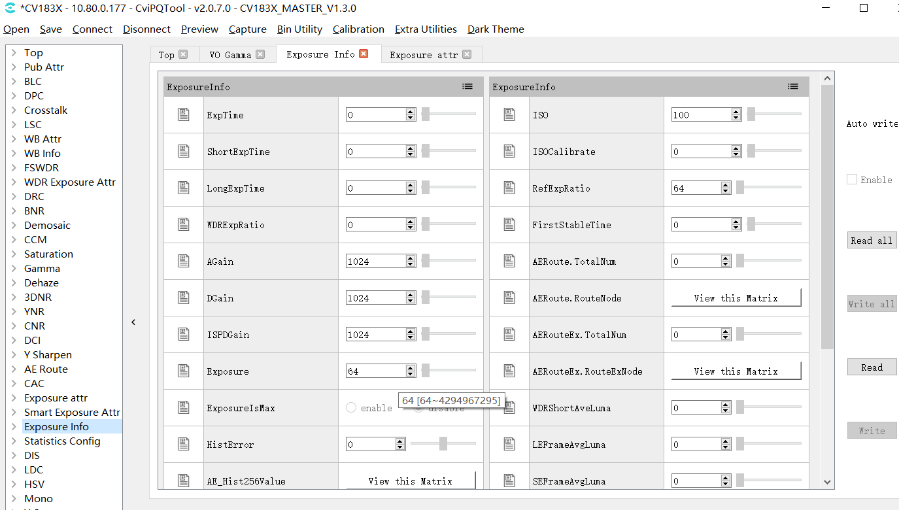
图 3.9 曝光数据状态页面¶
3.1.5.2. 曝光参数设置¶
Exposusre Attr页面可设置曝光相关参数，包含曝光时间、增益、ISO…等参数，如 图 所示。
{kind=link}
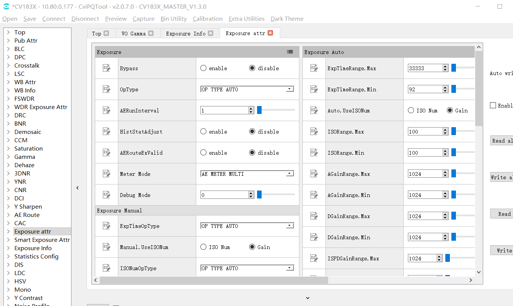
图 3.10 曝光参数设置页面¶
3.1.6. 白平衡数据状态和参数设置¶
3.1.6.1. 白平衡数据状态¶
WB Info页面可显示当前的白平行数据状态，包含增益、色温…等数据，如 图 所示。

图 3.11 白平衡数据状态页面¶
3.1.6.2. 白平衡参数设置¶
WB Attr页面可设置白平行相关参数，包含增益、色温…等参数，如 图 所示。
{kind=link}
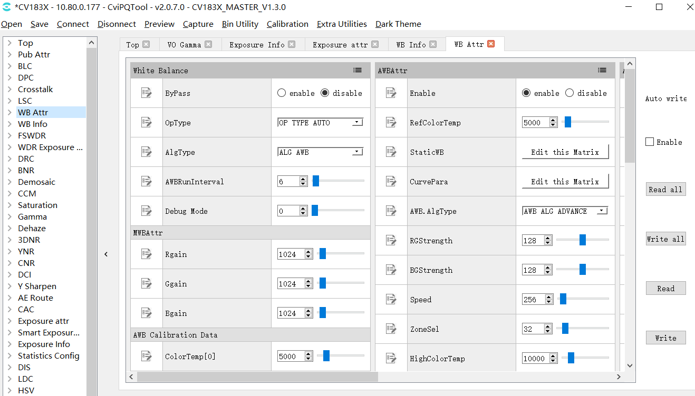
图 3.12 白平衡参数设置页面¶
3.1.7. WDR曝光参数设置和Local-tone开关¶
详细WDR和DRC参数说明请参考”图像调优指南” WDR章节和DRC章节。
3.1.7.1. WDR曝光参数设置¶
WDR Exposusre Attr页面可设置宽动态曝光相关参数，包含曝光比…等参数，如 图 所示。
{kind=link}
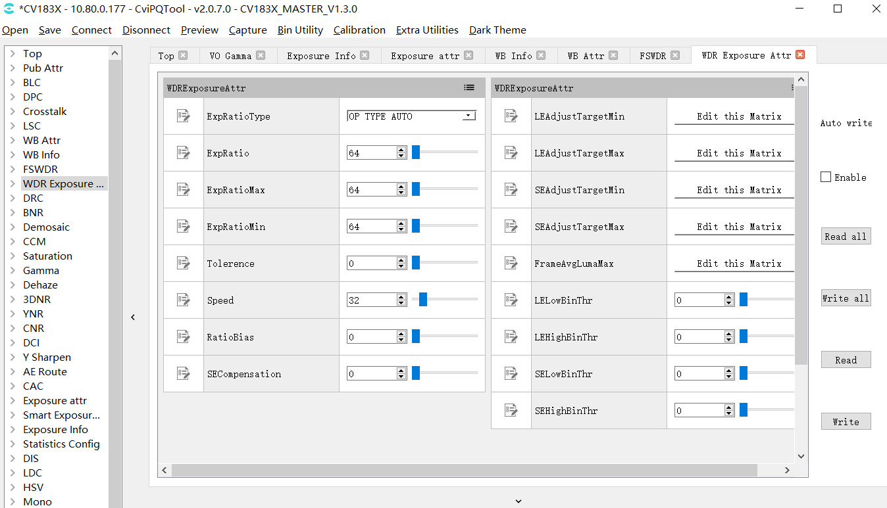
图 3.13 WDR曝光参数设置页面¶
3.1.7.2. Local-tone开关¶
在DRC页面可开启或关闭Local-tone，当[LocalToneEn]参数设置enable时表示Local-tone开启，当[LocalToneEn]参数为设置disable时表示Local-tone关闭，如 图 所示。

图 3.14 DRC Local-tone开关¶
3.1.8. 3DNR和YNR降噪调试¶
降噪相关调试参数字于3DNR和YNR页面，详细降噪参数说明请参考”图像调优指南” 3DNR章节和 YNR章节。

图 3.15 3DNR页面¶
{kind=link}
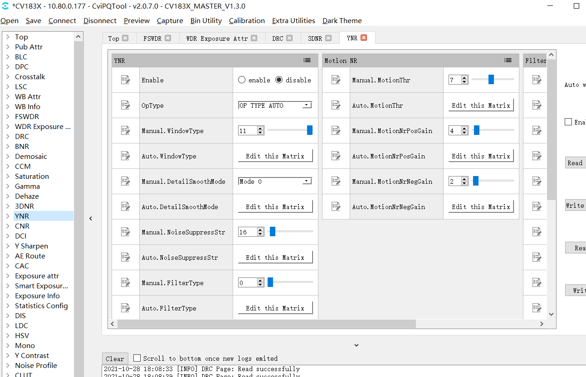
图 3.16 YNR页面¶
3.1.9. Y Sharpen锐化和边缘增强调试¶
Y Shapren页面包含锐化和边缘增强相关参数，详细锐化和边缘增强参数说明请参考“图像调优指南”Sharpen章节。

图 3.17 Y Sharpen页面¶
3.1.10. Top页面¶
Top页面包含ViPipe和ViChn参数，如果版端有两个sensor，可用Vipipe切换不同Sensor的调试参数，另外可用ViChn切换屏幕上要显示那个sensor的影像。
{kind=link}
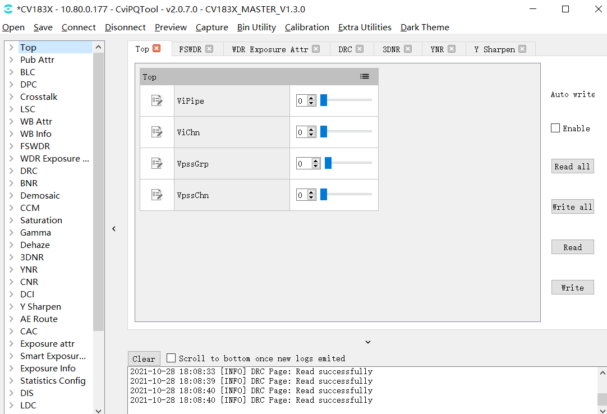
图 3.18 Top页面¶
3.1.11. VPSS Adjustment 页面¶
VPSS Adustment 页面用于调试 vpss 相关参数，调试过程有以下几点需要注意：
使用 pqtool调试过程中 scene id 和 vpss grp id 是 一一对应的，即 scene0 的参数会写到 grp 0；
App 实际使用时需要在每次 load pq bin 后主动调用 CVI_VPSS_SetGrpParamfromBin 设定 scene 与 vpss grp id 的绑定关系，设定的同时 pq bin 中的 vpss 参数才会生效，否则使用 pqtool 调试好的 vpss 参数在 load pq bin 后是不会生效的。
注：这样设计的原因是 pq 参数调试过程中无法预测 app 实际会使用哪个 vpss grp id，所以调试时是一一对应调试，app 使用调试生成的 pq bin 时需要根据实际场景指定映射关系。
3.1.12. LDC 页面¶
LDC 页面用于调试 VI和VPSS LDC module 相关参数，在使用过程有以下几点需要注意：
在Read all和Write all时，不包含对LDC页面的读写操作。故而对LDC页面进行相关读写设置时，需要进入此页面进行单独操作(点击Read或Write按钮)方可有效。
目前LDC运算操作是在板端进行且其计算量大，耗时较久，完成一次计算操作需要约2分钟，PQtool在此间需要等待，之后才能对PQtool进行下次的有效操作。
3.2. ISP标定工具¶
请参考 “图像调优指南” 完成ISP标定。
3.3. 高级功能¶
3.3.1. 参数的导出导入¶
工具的参数可以支持在PC端以配置文件的方式导入导出，也支持工具将参数固化到板端。
3.3.2. 通讯日志¶
与单板连接后，所有与板端的数据交互都会记载日志并显示在通讯日志窗口，如 图 所示。与板端进行数据交互时，记载的日志包含以下信息：
通讯时间；
通讯方式与参数；
通讯内容（如当前读取或写入的调试项）；
如果通讯出错，则显示错误信息。

图 3.19 通讯日志窗口¶
3.4. 其他辅助工具使用说明¶
3.4.1. 抓拍工具使用说明¶
可以抓取板端的图像数据（YUV和Raw）并保存为本地文件。
3.4.1.1. 工具界面¶
在调试工具菜单栏点击Capture按钮即可打开抓拍工具窗口，如 图 所示。

图 3.20 抓拍工具窗口¶
Save WDR LE and SE raws individually：勾选时，LE raw,SE raw 分开存放；去勾选时，两张raw合并存放。
Capture raw tightly: 抓取raw的方式不同，勾选时抓取速度快点，去勾选时速度慢些。
Save BMP file: 勾选将保存一张bmp图像，默认保存jpg和bmp格式图片。
image窗口下方，显示对点的x,y坐标及r,g,b值，会随着鼠标移动改变。
Dump all repeatedly:勾选将按Interval 设置时间（s）重复dump all。
3.4.1.2. 抓取YUV图像数据¶
抓取YUV数据的步骤：
在“YUV Image”分组框内选择要抓取YUV数据的来源位置，即在Capture from下拉菜单选择VI/VPSS；
在Frames文本输入框输入要抓取的帧数；
点击Capture按钮，若抓取成功会自动将YUV数据储存在“Open Save Path”所显示的路径位置，且YUV数据会显示在右侧图像显示区域，可通过点击Previous/Next按钮逐帧查看；
—-结束
3.4.1.3. 抓取Raw图像数据¶
抓取Raw数据的步骤：
在“Raw Image”分组框内选择要抓取Raw数据的比特位数，即在Bits下拉菜单选择8bits/10bits/12bits/16bits；
在Mode下拉菜单选择当前模式为Linear、WDR或Auto；
在Frames文本输入框输入要抓取的帧数；
点击Capture按钮，若抓取成功会自动将Raw和Raw Info数据储存在“Open Save Path”所显示的路径位置，且Raw数据会显示在右侧图像显示区域，可通过点击Previous/Next按钮逐帧查看；
—-结束
3.4.1.4. Dump All¶
Dump All可抓取YUV、RAW图像及日志信息，抓取文件如下：

抓取步骤：
在YUV Image中设置好yuv抓取信息；
在RAW Image中设置好raw抓取信息；
点击Dump All中Capture按钮，tool将先抓取并保存raw图像及文件，然后抓取并保存yuv图像及文件，右侧图像显示区将显示raw图像，可通过点击Previous/Next按钮逐帧查看。
3.4.1.5. Caputure Timing¶
定时抓取YUV、RAW、Dump All三类图片，抓取步骤如下：
“在Capture mode”的下拉菜单选中要抓取的图片类型，默认为抓取YUV图片。
在“Time”中输入要定时抓取的时间，默认为10秒。
点击“Start”按钮，即可启动定时，待达到定时时间时，就会从板端获取对应相关数据。
若在定时抓取的中间，想取消此操作，点击“Stop”按钮即可。
3.4.1.6. YUV图像和Raw图像文件名格式说明¶
YUV图像文件名格式范例如下：
{kind=link}
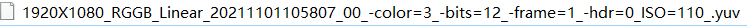
– 1920X1080表示宽度为1920高度为1080
– color=3表示BayerID=3 (0: BGGR，1: GBRG，2: GRBG，3: RGGB)
– bits=12表示影像有效位数是12-bit
– frame=1表示此档案包含1张YUV图像
– 20211101105807表示存盘的时间，格式为”yyyymmddhhmmss”
RAW图像文件名格式范例如下：
{kind=link}
– 3840X1080表示宽度为3840高度为1080
– RGGB表示ByaerID
– WDR表示为宽动态图像
– color=3表示BayerID=3 (0: BGGR，1: GBRG，2: GRBG，3: RGGB)
– bits=12表示影像有效位数是12 bits
– frame=1表示此档案包含1张RAW图像
– hdr=1 表示为宽动态影像
– 20211101111620表示存盘的时间，格式为”yyyymmddhhmmss”
这里的Raw经过解压裁剪： size = width * height * 2 * frame；
3.4.1.7. Raw Info文件格式和内容说明¶
RAＷ Info文件名格式范例如下：
{kind=link}
RAW Info的文件名格式和RAW图像的文件格式完全相同，只差在扩展名为TXT文本文件。
RAＷ Info档案内容范例如下：

3.4.2. 视频播放工具使用说明(VLC)¶
3.4.2.1. 使用VLC播放板端视频流步骤¶
步骤一 ：VLC播放工具下载，可到此地址下载免安装Windows版本的VLC播放软件。
其他平台的VLC版本请到VLC官网自行下载。(https://get.videolan.org/vlc/3.0.10/win32/vlc-3.0.10-win32.zip)
步骤二 ：打开工具, 对VLC做参数设定，保存后重启VLC。
{kind=link}
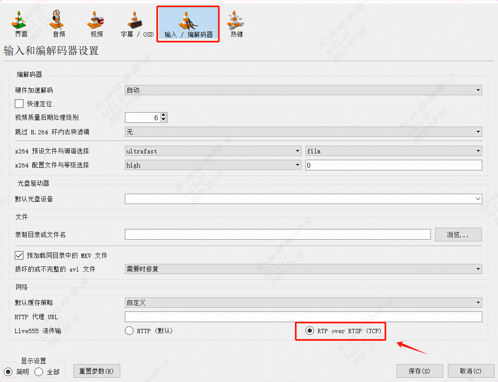
图 3.21 VLC设置界面¶
步骤三 ：使用网线连接开发板与电脑端，详情请参考“EVB使用手册”。
步骤四 ：在板端通过串口进入文件系统，启动CviISPTool程序
开发板连接的电脑需要设置到相同IP网段，并保证以相互ping通后，便可在与开发板连接的电脑上启动VLC进行播放。如下是播放设置部分参数，设置完后点击播放按钮便可以看到Sensor画面。
{kind=link}
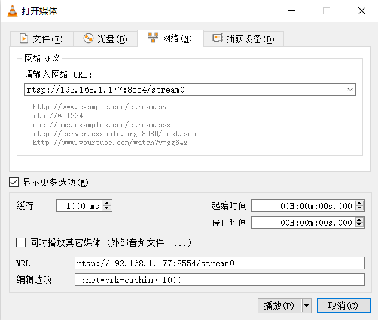
图 3.22 VLC播放参数设置¶
{kind=link}
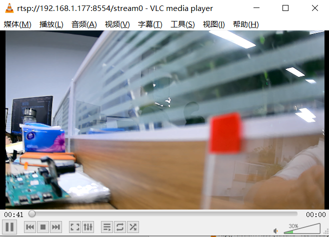
图 3.23 VLC播放视频流¶
3.4.3. 辅助对焦工具使用说明¶
3.4.3.1. 工具界面¶
工具首页，选择工具栏Extra Utilities->Focus Assistant，辅助对焦界面如下图
{kind=link}
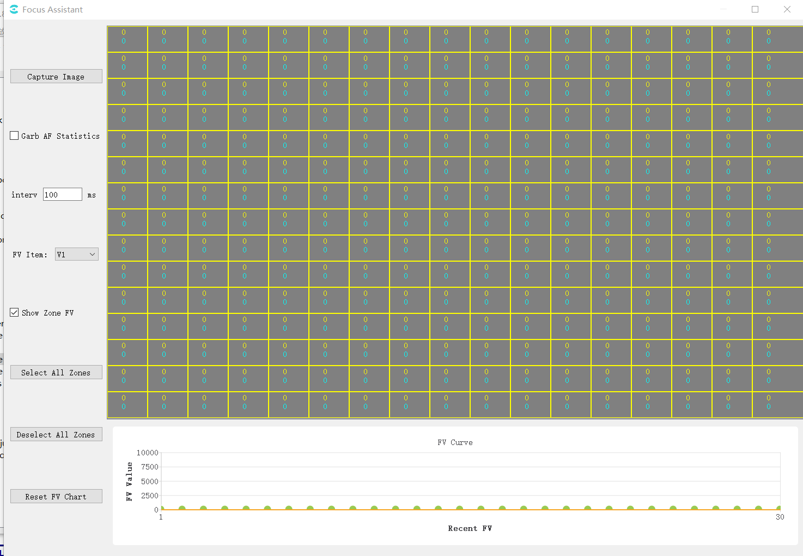
工具界面主要分三大部分：
(1)操作区：进行各种工具操作
(2)图像和区间显示区：显示抓拍到的图像，区间分布和各个区间的FV值（其中黄色值为区间当前的FV值，蓝色的值为区间历史FV最大值）
(3)FV变化曲线：显示全局FV值的变化曲线。其中横坐标为1的点为最近取到的FV值所表示的点。每次FV值刷新时，之前取到的值会右移。
3.4.3.2. 利用辅助对焦工具进行调焦¶
使用辅助对焦工具调焦的步骤如下：
步骤1.将镜头焦距调整为最模糊状态
步骤2.确定当前设备的AF区间配置状态：勾选Grab AF Statistics，并在图像显示区的区间数量变化时去除勾选。
步骤3.选择FV组别：在FV Item下拉框下选择V1（垂直方向）和H1组（水平方向）。
步骤4.在图像和区间显示区域点击确定调焦时需要关注哪些区间。其中关注的区间左上角会显示一个绿色圆。可以点击工具左侧的Select All Zones选定所有区间，Deselect AllZones取消所有区间选定，方便操作。
步骤5.再次勾选Grab AF Statistics。此时图像显示区和下方的曲线图开始不断刷新。
步骤6.调整镜头焦距。此时FV值曲线最大值蓝线稳步升高。
步骤7.当发现FV值曲线上1位置的点开始出现平稳下降时，最大值蓝线的位置应该不再变化（可视为蓝线FV为理论最优对焦FV）。此时反方向调焦至1位置上的点无限接近蓝线位置即可。
3.4.3.3. 对焦辅助操作¶
如果用户在调焦过程中，需要确定点播图像上的区域属于哪个区间，可以点击CaptureImage来抓拍一帧图像。图像显示在图像区域后，即可进行确认。
工具上Grab AF Statistics勾选后，工具将以一个固定的时间间隔从板端获取AF统计信息。用户可以修改通过界面上的Interval值来改变这个间隔。改变范围为100~1000毫秒。
如果用户不需要查看分区间FV值的当前值和峰值，可以将左侧的Show Zone FV复选框去除勾选。去除勾选后再次勾选，区间FV值会再次显示。
如果用户改变了区间配置，此时的理论FV最大值会发生变化。建议用户此时点击“Reset FV Chart”按钮。点击后，右下方图表中的历史全局FV值将被清空，最大FV值的蓝线也将归零。
3.4.4. 3A分析工具¶
3.4.4.1. 工具界面¶
工具首页，在工具栏选择Extra Utilities -> 3A Analyser，3A分析界面如下图：

3.4.4.2. 获取图像与统计数据¶
CviPQTool与板端连接。
在3A分析工具的主界面上，在Capture Image from之后的下拉框中，选择图像数据源（目前工具仅支持从VI上获取图像数据）。
勾选Capture Image from之前的复选框。之后工具将自动从板端抓取数据，直到用户取消对Capture Image复选框的勾选。成功从板端抓取数据后，工具会在下方的灰色区域显示图像效果如下图所示：
{kind=link}
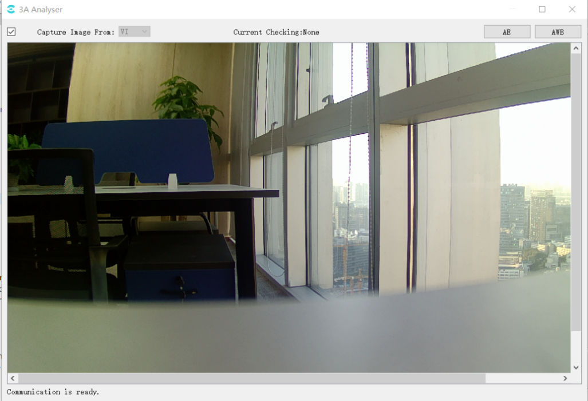
但当板端无法获取到YUV图时，会使用raw图进行显示，raw图显示的效果见下图：

3.4.4.3. 查看AE统计数据¶
点击3A分析工具界面右上角AE按钮，可以打开AE统计信息窗口如下图所示：
{kind=link}
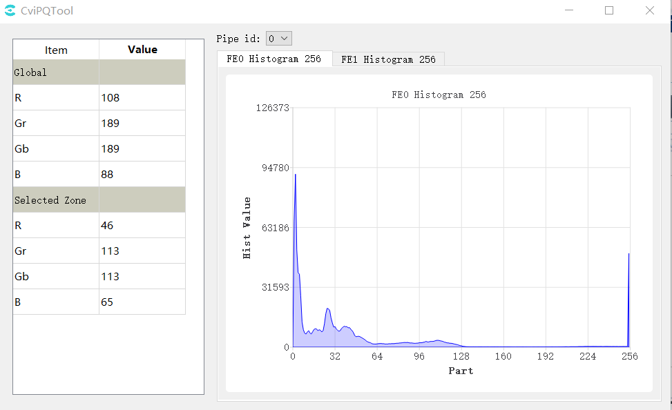
同时3A分析工具主界面图像区域也会被黄线分割成一个个区间，用户可以使用鼠
标左键进行区间选择，如下图所示。

统计信息：可以查看全局（Global）和分区间(Selected Zone)的分量平均值。在3A分析工具主界面切换选区时，选择区间的统计信息数据会变化。
3.4.4.4. 查看AWB统计数据¶
点击3A分析工具界面右上角AWB按钮，可以打开AWB统计信息窗口如下图所示：
{kind=link}
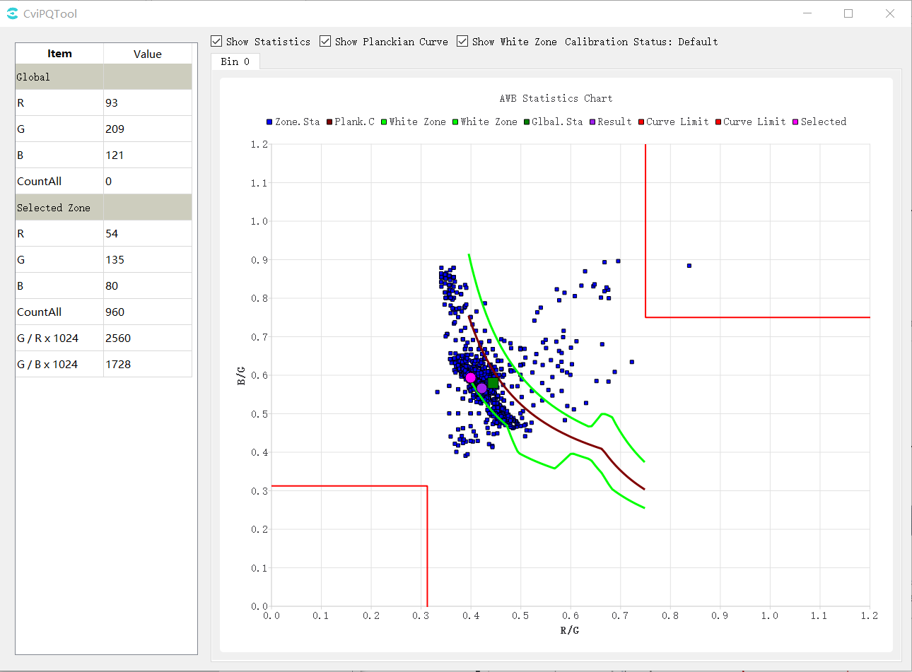
同时，3A分析工具的主界面图像区域也会被黄线分割成一个个区间，用户可以使用鼠
标左键进行区间选择，如下图所示：
{kind=link}
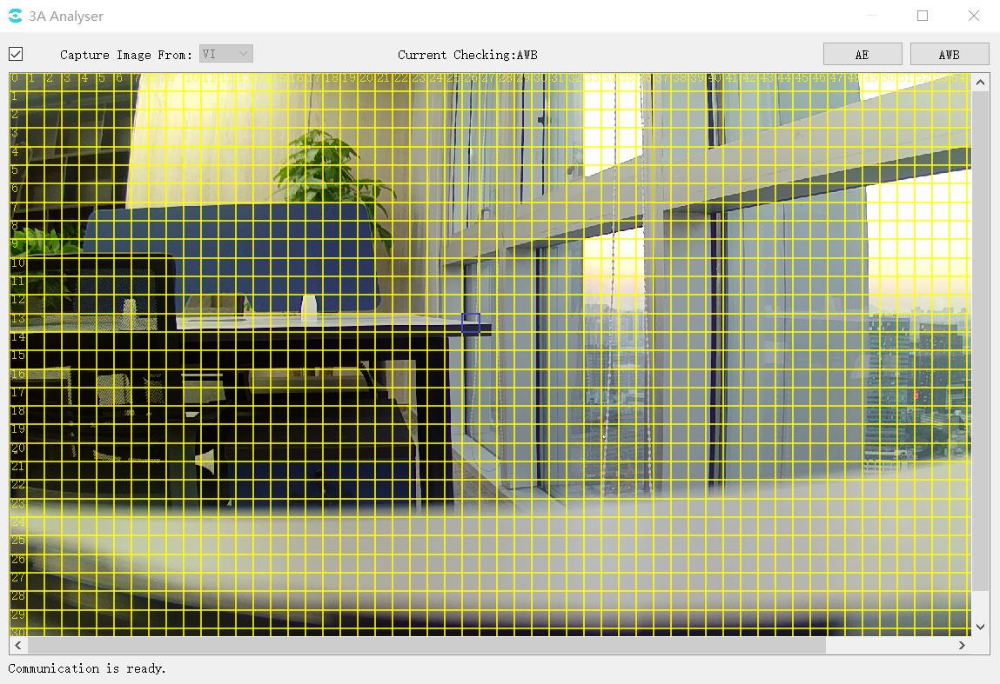
在统计图上显示的内容有：
红棕色色曲线：普朗克曲线(plank.c)。
绿色点：全局(global)统计信息在普朗克坐标系上对应的点。
紫色点：AWB计算结果在普朗克坐标系上对应的点。
蓝色点：分区间统计信息在普朗克坐标系上对应的点。
红色点：鼠标选择的图片分区（selected zone）在普朗克坐标系上对应的点。
绿色曲线：基础白区区间。
右上和左下的红色直线围成的区域：右上和左下的红色直线围成的区域：分别为排除紫色和绿色干扰而从白区中剔除的区间。与 AWB 参数中的 CurveLLimit和CurveRLimit 相关
通过图像上方的Show Statistics、ShowPlanckian Curve、ShowWhite Zone可分别控制坐标图上统计信息、色温曲线和白区区间的显示与隐藏。
3.4.5. 包围曝光¶
在工具栏选择Extra Utilities -> Bracketing，包围曝光窗口如下图所示。

LE/SE Max:设置长短曝最大值
LE/SE Min:设置长短曝最小值
LE/SE Step:步长
Capture:抓取由LE/SE设置的不同曝光组合的raw
AE 10 RAW:抓取10张特定曝光的raw
Save BMP file:保存BMP图像，默认保存JPG
Open Save Path: 文件保存目录
抓取张数计算：
LeNum = (LeMax - LeMin) / LeStep + 1;
SeNum = (SeMax - SeMin) / SeStep + 1;
wdr: TotalNum = LeNum * SeNum;
linear: TotalNum = LeNum
3.4.6. 连续raw工具¶
在工具栏选择Extra Utilities -> Continuous Raw，连续raw工具如下图所示。

Preview，预览当前画面
Capture：点击capture，将抓取yuv并显示在右边窗口；
ROI，抓raw设置
Frames：抓取raw张数；
Width/Height：当前画面的宽高；
CropX/CropY/CropW/CropH：设置抓取raw的大小、位置；
Capture：开始抓取raw;
Save，保存设置
Open Save Path：选择保存路径；
Save Location：选择保存位置，选择local，raw文件保存在pc端，选择sd card，raw文件保存在板端；
抓取文件如下图所示：
{kind=link}
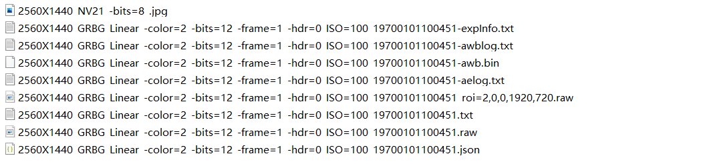
这里的raw图是经过压缩的，大小计算方法如下：
全尺寸raw
Size = (width * 6 / 8 + 15) / 16 * height * frame;
如果Width > 2304, 压缩模式为tile，Width需要再加上8；
roi raw
Size = (CropW * 6 / 8 + 15) / 16 * CropH * frame;
如果Width > 2304，且CropW > 1536, 压缩模式为tile，CropW需要再加上8；
3.5. 参数详细说明¶
以下列出在工具界面上各模块参数对应的SDK的API函数参考的说明，如表所示。
功能模块 |
对应 SDK API |
|---|---|
Mode Handle |
N/A |
Bypass Setting |
CVI_ISP_SetModuleControl CVI_ISP_GetModuleControl |
Fmw State |
CVI_ISP_SetFMWState CVI_ISP_GetFMWState |
CTRL Param |
CVI_ISP_SetCtrlParam CVI_ISP_GetCtrlParam |
MOD Param |
CVI_ISP_SetModParam CVI_ISP_GetModParam |
功能模块 |
对应 SDK API |
|---|---|
PubAttr |
CVI_ISP_SetPubAttr CVI_ISP_GetPubAttr |
功能模块 |
对应 SDK API |
|---|---|
ISPInfo |
CVI_ISP_QueryInnerStateInfo |
功能模块 |
对应 SDK API |
|---|---|
ExposureAttr |
CVI_ISP_SetExposureAttr CVI_ISP_GetExposureAttr |
功能模块 |
对应 SDK API |
|---|---|
WDRExposureAttr |
CVI_ISP_SetWDRExposureAttr CVI_ISP_GetWDRExposureAttr |
功能模块 |
对应 SDK API |
|---|---|
ExposureInfo |
CVI_ISP_QueryExposureInfo |
功能模块 |
对应 SDK API |
|---|---|
AERoute |
CVI_ISP_SetAERouteAttr CVI_ISP_GetAERouteAttr CVI_ISP_GetAERouteAttrEx CVI_ISP_SetAERouteAttrEx |
功能模块 |
对应 SDK API |
|---|---|
White Balance |
CVI_ISP_SetWBAttr CVI_ISP_GetWBAttr |
AWBAttr |
CVI_ISP_SetWBAttr CVI_ISP_GetWBAttr |
MWBAttr |
CVI_ISP_SetWBAttr CVI_ISP_GetWBAttr |
AWB Calibration Data |
CVI_ISP_GetWBCalibration CVI_ISP_SetWBCalibration |
AWBAttrEx |
CVI_ISP_GetAWBAttrEx CVI_ISP_SetAWBAttrEx |
功能模块 |
对应 SDK API |
|---|---|
WBInfo |
CVI_ISP_QueryWBInfo |
功能模块 |
对应 SDK API |
|---|---|
CCM |
CVI_ISP_SetCCMAttr CVI_ISP_GetCCMAttr |
ColorToneAttr |
CVI_ISP_GetColorToneAttr CVI_ISP_SetColorToneAttr |
功能模块 |
对应 SDK API |
|---|---|
Demosaic |
CVI_ISP_SetDemosaicAttr CVI_ISP_GetDemosaicAttr CVI_ISP_SetDemosaicDemoireAttr CVI_ISP_GetDemosaicDemoireAttr |
功能模块 |
对应 SDK API |
|---|---|
3DNR |
CVI_ISP_SetTNRAttr CVI_ISP_GetTNRAttr CVI_ISP_SetTNRMvAttr CVI_ISP_GetTNRMvAttr CVI_ISP_SetTNRPsAttr CVI_ISP_GetTNRPsAttr CVI_ISP_SetTNRNrAttr CVI_ISP_GetTNRNrAttr |
功能模块 |
对应 SDK API |
|---|---|
DRC |
CVI_ISP_SetDRCAttr CVI_ISP_GetDRCAttr |
功能模块 |
对应 SDK API |
|---|---|
Crosstalk |
CVI_ISP_GetCrosstalkAttr CVI_ISP_SetCrosstalkAttr |
功能模块 |
对应 SDK API |
|---|---|
Shading Attr |
CVI_ISP_SetMeshShadingAttr CVI_ISP_GetMeshShadingAttr CVI_ISP_SetRadialShadingAttr CVI_ISP_GetRadialShadingAttr |
Shading Lut Attr |
CVI_ISP_SetMeshShadingGainLutAttr CVI_ISP_GetMeshShadingGainLutAttr CVI_ISP_SetRadialShadingGainLutAttr CVI_ISP_GetRadialShadingGainLutAttr |
功能模块 |
对应 SDK API |
|---|---|
Dynamic Attribute |
CVI_ISP_GetDPDynamicAttr CVI_ISP_SetDPDynamicAttr |
功能模块 |
对应 SDK API |
|---|---|
CNR Attr |
CVI_ISP_SetCNRAttr CVI_ISP_GetCNRAttr |
CNR FILTER Attr |
CVI_ISP_SetCNRFilterAttr CVI_ISP_GetCNRFilterAttr |
功能模块 |
对应 SDK API |
|---|---|
DCI |
CVI_ISP_SetDCIAttr CVI_ISP_GetDCIAttr |
DCI AUTO GAMMA ATTR |
CVI_ISP_SetDciAutoGammaAttr CVI_ISP_GetDciAutoGammaAttr |
功能模块 |
对应 SDK API |
|---|---|
Gamma |
CVI_ISP_SetGammaAttr CVI_ISP_GetGammaAttr |
功能模块 |
对应 SDK API |
|---|---|
FSHDR |
CVI_ISP_SetFSHDRAttr CVI_ISP_GetFSHDRAttr |
功能模块 |
对应 sDK API |
|---|---|
LUT 3D |
CVI_ISP_SetClutAttr CVI_ISP_GetClutAttr CVI_ISP_SetClutHslAttr CVI_ISP_GetClutHslAttr |
功能模块 |
对应 SDK API |
|---|---|
Sharpen |
CVI_ISP_GetSharpenAttr CVI_ISP_SetSharpenAttr |
功能模块 |
对应 SDK API |
|---|---|
Black Level |
CVI_ISP_GetBlackLevelAttr CVI_ISP_SetBlackLevelAttr |
功能模块 |
对应 SDK API |
|---|---|
BNR |
CVI_ISP_SetBNRAttr CVI_ISP_GetBNRAttr |
Filter |
CVI_ISP_SetBNRFilterAttr CVI_ISP_GetBNRFilterAttr |
功能模块 |
对应 SDK API |
|---|---|
Saturation |
CVI_ISP_GetSaturationAttr CVI_ISP_SetSaturationAttr |
功能模块 |
对应 SDK API |
|---|---|
AE/AF/AWB Config |
CVI_ISP_GetStatisticsConfig CVI_ISP_SetStatisticsConfig |
功能模块 |
对应 SDK API |
|---|---|
VI LDC |
CVI_VI_GetChnLDCAttr CVI_VI_SetChnLDCAttr |
VPSS LDC |
CVI_VPSS_GetChnLDCAttr CVI_VPSS_SetChnLDCAttr |
功能模块 |
对应 SDK API |
|---|---|
Mono |
CVI_ISP_GetMonoAttr CVI_ISP_SetMonoAttr |
功能模块 |
对应 SDK API |
|---|---|
YContrast Attr |
CVI_ISP_GetYContrastAttr CVI_ISP_SetYContrastAttr |
功能模块 |
对应 SDK API |
|---|---|
VPSS Adjustment |
CVI_VPSS_GetGrpProcAmp CVI_VPSS_SetGrpProcAmp |
功能模块 |
对应 SDK API |
|---|---|
NoiseProfile |
CVI_ISP_GetNoiseProfileAttr CVI_ISP_SetNoiseProfileAttr |
功能模块 |
对应 SDK API |
|---|---|
PFR |
CVI_ISP_SetPFRAttr CVI_ISP_GetPFRAttr |